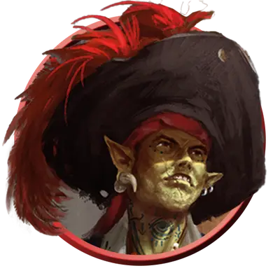

Капитан пиратов
Pirate Captain
Средний или Маленький Гуманоид, Нейтральный

Класс Защиты 17 Инициатива +7 (17)
Хиты 84 (13к8 + 26)
Скорость 30 футов
| мод | спас | ||
|---|---|---|---|
| СИЛ | 10 | +0 | +3 |
| ЛОВ | 18 | +4 | +7 |
| ТЕЛ | 14 | +2 | +2 |
| мод | спас | ||
|---|---|---|---|
| ИНТ | 10 | +0 | +0 |
| МДР | 14 | +2 | +5 |
| ХАР | 17 | +3 | +6 |
Чувства пассивное Восприятие 15
Языки Общий
Опасность 6 (2 300 опыта; БВ +3)
Действия
Мультиатака. Пират совершает три атаки Рапирой или Пистолем в любой комбинации.
Рапира. Бросок рукопашной атаки: +7, досягаемость 5 фт. Попадание: 13 (2к8 + 4) Колющего урона, и пират совершает с Преимуществом следующий бросок атаки до конца этого хода.
Пистоль. Бросок дальнобойной атаки: +7, дистанция 30/90 фт. Попадание: 15 (2к10 + 4) Колющего урона.
Бонусные действия
Обаяние капитана. Спасбросок Мудрости: Сл 14, одно видимое пиратом существо в 30 футах. Провал: Цель становится Очарованной до начала следующего хода пирата.
Реакции
Контратака. Условие: По пирату попадает бросок рукопашной атаки, пока он держит оружие. Эффект: Пират получает бонус +3 к КЗ против этой атаки, что может привести к её промаху. В случае промаха пират совершает одну атаку Рапирой против вызвавшего ответ существа, если оно в пределах досягаемости.
Бонус мастерства +3
Среда обитания Любая
Сокровища Личные, Инструментальные
Пираты
Флибустьеры и авантюристы
Понятие «пират» объемлет собой великое множество мореходов: здесь и безжалостные грабители, и упрямые каперы, и охотники за проклятыми сокровищами, и прочие авантюристы, чающие славы и богатства посреди солёных волн.
Пираты могут выступать как союзниками, так и врагами, а порой — играть роль непредсказуемой «тёмной лошадки», сочетая в себе все эти черты разом. Хотя они и предстают сущим бичом для купцов и прибрежных поселений, им ведомы тайны морей и способы избегать угроз, таящихся в пучине. Наиболее дерзкие и необычные пираты устремляют взор дальше линии горизонта. Они используют летучие корабли, астральные челноки, межпланарные суда или иной, ещё более диковинный транспорт, дабы грабить и исследовать пределы невообразимых миров.
Пиратские флаги
Дабы сеять ужас в сердцах противников и множить зловещую молву о себе, каждая пиратская команда поднимает над мачтами свой отличительный стяг. Совершите два броска по таблице «Пиратский флаг» для вдохновения или выберите сами, под каким знаменем ходит пиратская команда.
Пиратский флаг
| 1к8 | Флаг изображает… | Но не просто, а с… |
| 1 | Буканьера | Треуголкой |
| 2 | Дракона | Костями крест-накрест |
| 3 | Исчадие | Скрещенными клинками |
| 4 | Козла | Глазной повязкой |
| 5 | Кракена | Разрядами молнии |
| 6 | Русалку | Пивной кружкой |
| 7 | Череп | Татуировкой |
| 8 | Кита | Сундуком сокровищ |
Капитаны пиратов начальствуют над своими экипажами, назначая курс и выбирая цели. Они тщательно взращивают грозную и театральную славу, выставляя себя фигурами почти былинного размаха — дабы наводить ужас на врагов, держать в повиновении собственные команды и манить под свои знамёна новых последователей. Многие носят колоритные прозвища, навеянные их отличительными повадками или нашумевшими «подвигами».